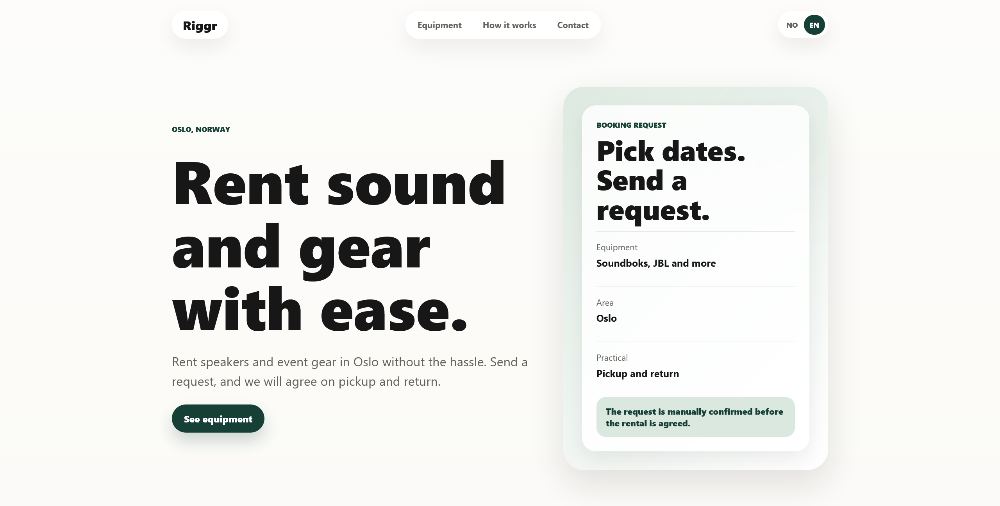
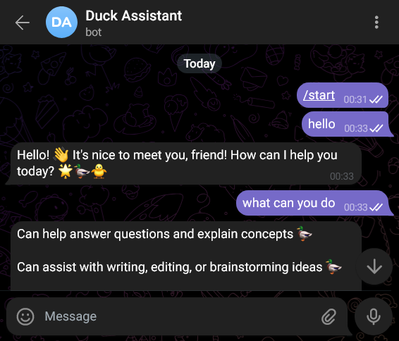
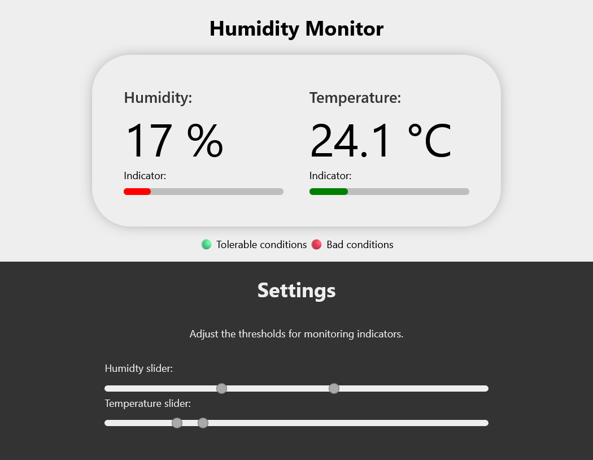

Heisann! Mitt navn er
Daniel Faour.
Jeg er en UX-designer og programvareutvikler.


Om meg
Jeg er en utvikler og UX-designer med mastergrad i informatikk fra Universitetet i Oslo, med bakgrunn i både systemutvikling og UX-design. Jeg liker å jobbe i skjæringspunktet mellom kode, design og brukerbehov, og trives med prosjekter der jeg kan være med fra tidlig idé til en fungerende løsning.
Jeg har erfaring med fullstack-utvikling, front-end, React-baserte webapplikasjoner, Python, API-er og enklere backend-logikk. Flere av prosjektene mine kombinerer også software med fysiske eller interaktive elementer, som IoT, Arduino, sensorer og taktile grensesnitt.
På designsiden jobber jeg med brukersentrert design, prototyping, brukertesting, workshops og universell utforming. For meg handler god design ikke bare om hvordan noe ser ut, men om at strukturen, funksjonen og opplevelsen faktisk henger sammen for menneskene som skal bruke det.
Jeg har også erfaring med prosjektledelse og tverrfaglig samarbeid fra Designforeningen ved IFI, der jeg ledet en studentorganisasjon med utviklere og designere. Jeg liker å ta ansvar, holde oversikt og bidra til at et team beveger seg mot en løsning som er både gjennomførbar og gjennomtenkt.
Utenom fag og prosjekter liker jeg fotografering, matlaging, trening, gaming og å tilbringe tid med venner. Jeg liker å ha ting rundt meg som gir rom for både fokus og kreativitet, og jeg merker at det også preger hvordan jeg jobber. Jeg er nysgjerrig på detaljer, liker å lage ting som fungerer i praksis, og setter pris på gode løsninger som føles enkle selv når det ligger mye tanke bak.
Ferdigheter
Design
 UX-design
Universell design
Etisk design
Produktdesign
Brukersentrert design
Prototyping
Brukertesting
UX-design
Universell design
Etisk design
Produktdesign
Brukersentrert design
Prototyping
Brukertesting
Utvikling
 Webutvikling
Apputvikling
Programmering
Informasjonssikkerhet
Fullstack-utvikling
React
TypeScript
Python
Webutvikling
Apputvikling
Programmering
Informasjonssikkerhet
Fullstack-utvikling
React
TypeScript
Python
Hardware og data
 Internet of Things
Breadboarding
API-utvikling
PC-bygging og feilsøking
Internet of Things
Breadboarding
API-utvikling
PC-bygging og feilsøking
Team og forretning
 Prosjektledelse
Lederskap
Public Relations
Prosjektledelse
Lederskap
Public Relations
 Salg
Tverrfaglig samarbeid
Teknisk koordinering
Salg
Tverrfaglig samarbeid
Teknisk koordinering
AI
 Kunstig intelligens
Prompt engineering
KI-arbeidsflyt
No-code
Vibe coding
Kunstig intelligens
Prompt engineering
KI-arbeidsflyt
No-code
Vibe coding
Se gjennom arbeidet mitt!
Masteroppgave i Informatikk - IN5960
2024

"The Three Fundamental Qualities for Emotional Influence in Design"
Denne masteroppgaven undersøker forholdet mellom design og følelser, med fokus på de grunnleggende kvalitetene som påvirker emosjonelle responser i designartefakter. Ved å bruke Research through Design som hovedmetode, støttet av prinsipper fra Emotional-Driven Design, utforsker oppgaven hvordan disse kvalitetene bidrar til å skape følelsesmessig engasjerende installasjoner. Prosessen bestod av fire faser: datainnsamling, konseptutvikling, utvikling av installasjonen og analyse. Gjennom arbeidet identifiserte vi tre grunnleggende kvaliteter: historiefortelling, sanselig engasjement og familiaritet. Disse viser seg å være sentrale for å skape mer immersive opplevelser. I tillegg kan elementer som utforskning, meningsfulle interaksjoner, kontraster og robusthet ytterligere styrke det emosjonelle engasjementet. Studien gir både teoretisk støtte og praktiske føringer innen designorientert HCI og RtD-metodikk, og presenterer et rammeverk for videre forskning og utvikling av emosjonelt engasjerende interaktive artefakter.
Karakter: B
Drikkings.no
2025

Dette er en drikkelek-applikasjon som skal lage engasjerende spill for mindre grupper uten å ødelegge praten. Målet er å gjøre den lett tilgjengelig som en nettapplikasjon, derfor bruker jeg React + Vite. Den har nå fem spill, blant annet «1/16 Minesweeper» og «Shot Roulette», som vises på bildet. Applikasjonen er laget for å være brukervennlig og lett å navigere, slik at folk raskt kan komme i gang og spille.
Riggr
2026

Riggr er en liten utleieplattform jeg bygget i samarbeid med Codex for høyttalere og eventutstyr i Oslo. Målet var å lage en enkel og praktisk løsning der brukere kan se utstyr, sjekke datoer, få estimert pris og sende en forespørsel uten konto eller betalingsløsning. Nettsiden er bygget med React og Vite, med Google Sheets og Apps Script som en lett backend for produkter og bookinger. Den støtter norsk og engelsk, flere produkter i samme forespørsel, tilgjengelighetssjekk og mobilvennlig bruk.
Telegram AI Assistent
2026

Dette er et lite prosjekt hvor jeg utviklet en personlig chatbot
for Telegram. Jeg satte opp boten gjennom BotFather og koblet den
videre til en Python-integrasjon som kommuniserer med en AI-modell
som kjører lokalt på egen maskin via LM Studio API.
Målet med prosjektet var å utforske hvordan man kan bygge en
privat og tilgjengelig AI-assistent uten å være avhengig av
eksterne tjenester for selve modellkjøringen. Ved å kjøre modellen
lokalt får jeg mer kontroll over dataflyt, personvern og
sikkerhet, samtidig som assistenten kan tilpasses egne behov.
Prosjektet ga meg praktisk erfaring med Telegram Bot API, Python,
lokal modellintegrasjon og hvordan ulike systemer kan kobles
sammen til en fungerende helhet. Det var også en fin måte å teste
hvordan AI kan brukes i mer personlige og kontrollerte løsninger.
Fuktighetsmonitor
2026

Jeg har en stund hatt problemer med tørre øyne om vinteren, og for
å finne ut den underliggende årsaken til dette problemet, lagde
jeg et IoT-prosjekt med en ESP32 for å være vert for et lokalt
server-API i nettverket mitt for å overvåke fuktigheten med en
fuktighets- og temperatursensor. Deretter lagde jeg en
front-end-applikasjon i React for å lese disse API-dataene og
visualisere dem gjennom et enkelt dashbord.
Gjennom dette prosjektet fant jeg ut at jeg har bodd i dårlige
soveromsforhold med lav luftfuktighet, noe som har en tendens til
å fremme tørre øyne. Takket være dette går jeg videre med å
synkronisere dette prosjektet med et annet prosjekt som involverer
vanndiffusorer for å skape et fuktigere miljø.
Mus Kontroller
2025
Dette er et lite prosjekt jeg lagde for å kunne styre musen på datamaskinen ved hjelp av en hvilken som helst Bluetooth-spillkontroller. Jeg brukte Pygame til å lese kontroller-inputs og Pyautogui til å styre musen samt enkelte tastetrykk. Perfekt for presentasjoner eller når du ønsker å kontrollere PC-en fra avstand.
Baymax Psykologi AI
2025

En psykolog-inspirert AI-chatbot basert på Baymax fra Big Hero 6.
Laget med Angular og Typescript. Chatboten er utviklet for å gi
emosjonell støtte og assistanse til brukeren. Det er i bunn og
grunn en enkel nettapplikasjon som bruker OpenRouter-API for å
generere svar. Applikasjonen består av et chatgrensesnitt der
brukeren kan snakke med chatboten og få svar tilbake. Samtalen
lagres i local storage til neste besøk, og brukeren kan slette
historikken når som helst.
Merk: Dette prosjektet er kun for læringsformål og er ikke ment
som en erstatning for profesjonelle psykiske helsetjenester.
Stor data Analyse Case
2025

Dette er en case-oppgave jeg gjorde til et teknisk intervju. Oppgaven gikk ut på å analysere et datasett med 100 000 rader og 10 kolonner, der jeg skulle finne mønstre og innsikter i dataene. Jeg skulle analysere og presentere det viktigste på en måte som var enkel for brukeren å forstå. Jeg brukte Angular og Typescript for å lage nettapplikasjonen. Løsningen inneholder et dashboard med ulike komponenter, blant annet en interaktiv tabell, flere typer grafer og et kart for å visualisere dataene.
Gjøreliste
2025

En enkel gjøreliste laget med React der du kan skrive inn og legge til oppgaver. Når en oppgave er fullført kan du slette den. Ikke bekymre deg, oppgavene lagres i lokal lagring (localStorage) slik at de er tilgjengelige ved ditt neste besøk!
Threads of Life
2023

Promosjonsplakat for en interaktiv installasjon fra et gruppeprosjekt i IN5120 - Tangible Interaction. Her lagde vi et interaktivt og utforskbart miljø ved hjelp av flere tilkoblede Arduinos, som simulerte forbindelsene mellom sopper i en ekte skog.
Glassic Melodies
2023

En interaktiv installasjon fra et gruppeprosjekt i IN5120 - Tangible Interaction, der Arduino og Ableton brukes til å spille musikk gjennom berøring av et vinglass. Installasjonen simulerer resonanslyden i from av musikk som oppstår når du glir fingeren over glassets kant, hvor musikkens tempo endrer seg basert på hvor raskt du spiller på glasset.
JaktApp
2021

I dette prosjektet hadde vi som mål å utvikle en Android-applikasjon som hjelper jegere med å gjennomføre en vellykket jakt, ved å bruke API-er fra Meteorologisk institutt og Google Maps. Prosjektet ble gjort som en del av IN2000 Software Engineering, og appen vant pris for årets beste app. Applikasjonen viser et kart med brukerens posisjon, værmeldinger og farevarsler. I tillegg har den en funksjon for å spille av ulike lokkelyder, spilt inn med ekte jaktinstrumenter, for å lokke dyr innenfor skuddhold.
Ergon
2022

Dette prosjektet tar for seg utfordringene unge voksne møter når de sitter lange dager foran PC-en. Løsningen består av et smart stoltrekk, «Ergotrekk», som oppdager dårlig sittestilling med innebygde trykksensorer. Når brukeren synker sammen eller sitter feil, vibrerer trekket lett for å minne dem på å rette seg opp. Med «Dock»-en kan brukeren tilpasse produktet etter behov, for eksempel skru det av i møter. Dock-en viser også en holdningsscore ved slutten av arbeidsdagen. Løsningen gjør det enkelt for unge voksne å opprettholde god ergonomi gjennom dagen uten å måtte tenke så mye over det, og bidrar til både bedre komfort og bedre fokus.
Interra
2020

Dette prosjektet handler om å hjelpe unge voksne mellom 20 og 30 år med å bli mer miljøbevisste i hverdagen. Ved å gi tilpasset informasjon og konkrete råd knyttet til daglige gjøremål, er målet å motivere målgruppen til å ta i bruk mer bærekraftige vaner. Med en brukersentrert tilnærming kartlegger prosjektet hva som hindrer folk i å handle mer bærekraftig, og presenterer praktiske løsninger som er enkle å få inn i rutinen. Målet er å gjøre miljøvennlige handlinger til en naturlig del av hverdagen, ikke bare noe man gjør av og til. På den måten bidrar det til en grønnere hverdag og en grønnere planet.
Walleyway Spill
2019

På videregående, i faget «Informasjonsteknologi 2», fikk vi i oppgave å lage et spill kun ved hjelp av JavaScript, HTML og CSS. Jeg laget en ny versjon av det klassiske Walleyway-spillet, som først kom på Gameboy, der du styrer en paddle for å sprette en ball og knuse blokker. Merk at spillet ble laget med tanke på svakere maskinvare, så det kan gå litt fortere på moderne enheter. Kanskje du er klar for utfordringen?